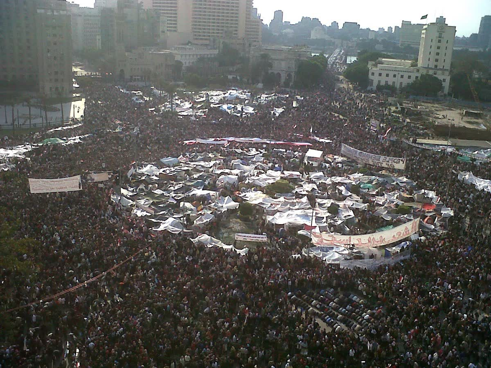
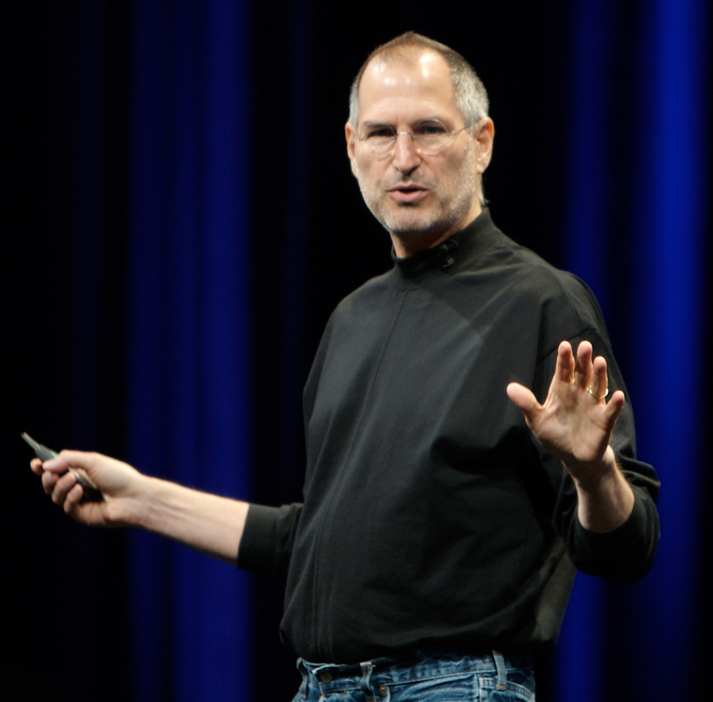

How Information Changed the World
Chapter Six
Revolutions in Your Pocket
Smartphones and Social Media · 2007–now
The Moment
It is January 25, 2011. A bright winter morning in central Cairo, Egypt. Tens of thousands of people are pouring into a wide downtown plaza called Tahrir Square — Liberation Square. Most of them are young, in their teens and twenties. Most of them are carrying smartphones.
For the next eighteen days, they will not leave.
They are protesting against Hosni Mubarak, the man who has ruled Egypt for almost thirty years. His government is famously corrupt, famously brutal. To organize against him in person has always meant risking prison, or worse. Egyptian streets, until this week, have been among the most heavily watched places on Earth.
But in the months leading up to that morning, something strange has been happening on a Facebook page.
The page is called We Are All Khaled Said. It was started in mid-2010 by a young Egyptian Google employee named Wael Ghonim, in memory of a 28-year-old man named Khaled Said who had been beaten to death by police in Alexandria after sharing a video that showed officers selling drugs. Ghonim posted Said's photo, his story, and information no Egyptian newspaper would dare to print.
Within months, the page had millions of followers — most of them young, most of them quiet, most of them inside Egypt.
When a smaller uprising in next-door Tunisia toppled its own dictator in early January 2011, Ghonim's page asked Egyptians to march in Cairo on January 25. Nobody knew how many would actually show up.
Far more came than anyone expected.
A revolution organized on a phone.
For the next two and a half weeks, Egyptians live in Tahrir Square. They tweet. They livestream. They share videos of police violence around the world before international news teams can even arrive. On February 11, 2011 — eighteen days after the first march — Mubarak resigns and flees the country.
A man who had ruled for almost thirty years is brought down in eighteen days. In part by a webpage that did not exist seven years earlier, accessed through a device that did not exist four years earlier.

Before
In 2006, the world about to be remade looked very different.
There were mobile phones, of course. Most of them could make calls and send short text messages. A few of the most expensive could check email, slowly and badly, through a tiny gray screen. Nobody called them "smartphones" yet, because the word did not really mean anything.
To go on the internet, you went home, you sat down at a desk, and you turned on a computer.
Facebook existed, but only college students could use it. It had been launched in 2004 by a 19-year-old Harvard student named Mark Zuckerberg, and for two years it was restricted to students at a small group of American universities. Until late 2006, you could not even sign up for it unless you had a university email address.
Twitter had launched a few months earlier in 2006. Almost nobody outside Silicon Valley had heard of it.
There was no Instagram. There was no Snapchat. There was no TikTok. There were no apps because there was no app store.
YouTube existed — it had launched in 2005 — but most of its videos were grainy 30-second clips of cats falling off tables. The idea that hundreds of millions of people would later watch videos for hours each day on their phones would have struck most people in 2006 as ridiculous.
The world was, in other words, quieter. Adults still mostly got their news from television and newspapers. Children still mostly played outside. Couples on dates still mostly talked to each other. Strangers in elevators still made eye contact.
Almost none of that was about to survive the decade.
The Tech
The change came in two waves.
The first wave was the smartphone.
On January 9, 2007, in a San Francisco auditorium, a man named Steve Jobs stood on a stage and announced what his company, Apple, had been quietly building for years. He told the audience he was unveiling three new products: a widescreen iPod with touch controls, a revolutionary mobile phone, and an internet device. Then he paused.
"Are you getting it? These are not three separate devices. This is one device. And we are calling it iPhone."
For decades, mobile phones had been covered in physical buttons. The iPhone had no buttons — only a single glass screen, the size of a palm, that you touched directly. It also had a real web browser, real email, and a high-quality camera. Within five years, almost every phone in the world looked like it.
Android, a competing system built by Google, launched in 2008 and quickly took over most of the rest of the market. By 2012, smartphones were standard equipment in wealthy countries. By the late 2010s, most adults on Earth carried one.
The spread did not happen everywhere at the same time:
A New Information Technology, in Three Waves
Smartphone Ownership by World Region, 2007–2024
The second wave was social media on those phones.
A handful of websites — Facebook (public to everyone in 2006), Twitter (2006), Instagram (2010), Snapchat (2011), TikTok (international in 2016) — moved out of computer screens and into pockets. They used a new tool called the algorithm: an invisible set of computer rules that decided, second by second, which post each user saw next. The algorithms learned what kept you scrolling. Then they fed you more of it.
This was a fundamentally new kind of information technology. Television had decided what an entire country would watch at 7 p.m. The new algorithms decided what you, specifically, would see in the next three seconds. Each user had a slightly different version of reality, hand-built by software that knew their attention better than they themselves did.

The Ripples
For a few years, the new tools looked like a gift to the world.
Tahrir Square was only the beginning. Across the Arab world — Tunisia, Egypt, Libya, Yemen, Syria, Bahrain — a wave of revolutions in 2010 and 2011, organized largely on Facebook, Twitter, and YouTube, shook governments that had been considered untouchable for decades. Journalists called it the Arab Spring. Optimistic books were written. Technology executives gave speeches about how their products were bringing democracy to the world.
The Arab Spring did not go where its first hopeful weeks suggested.
In Egypt, a year after Mubarak fell, an elected government was overthrown by the military. Tunisia, where the wave had begun, kept its new democracy for a while and then quietly lost it. Syria descended into a brutal civil war that still has not fully ended. Yemen collapsed. Libya collapsed. In most of these countries, the same regimes — or worse ones — eventually returned. And the same social-media platforms that had helped organize the revolutions were soon being used by intelligence services to identify and arrest protesters.
By the mid-2010s, the darker uses were getting harder to ignore.
In 2016 and the years after, several investigations revealed that a Russian intelligence operation had used Facebook, Twitter, and other platforms to flood American political conversations with fake accounts, manipulated photos, and inflammatory posts during the U.S. presidential election. Similar operations were soon uncovered in dozens of other countries. The cost of running a global propaganda campaign — the kind of thing that, in Chapter 2, required a whole telegraph network, and in Chapter 3 required a whole national radio system — had dropped to almost nothing. A roomful of people with internet connections could now reach a hundred million Americans before breakfast.
Around the same time, conspiracy movements began to organize on social platforms in ways that had been impossible before. Misinformation — false information spread, often deliberately, to mislead people — became some of the most-shared content on many platforms. A 2018 study of millions of tweets found that the most-shared false stories reached 1,500 people about six times faster than the most-shared true ones — because they were more emotional and more surprising. The algorithms did not check whether something was true. They checked whether it kept people scrolling.
Then came the attention economy. The platforms, almost without exception, made their money by selling advertisements that ran next to user content. To sell more advertisements, they needed users to spend more time on the apps. To make users spend more time, they hired the best psychology researchers in the world to design every notification, every red badge, every infinite scroll, every autoplay video. They designed the apps to be as compulsive as the law allowed. They succeeded.
The winners of all this were a handful of enormous platform companies — Meta (Facebook, Instagram), Alphabet (Google, YouTube), TikTok's parent company ByteDance, and a few others — which became some of the wealthiest organizations that have ever existed.
The losers were less visible. Local newspapers, gutted as their advertising revenue moved to the platforms. Teenage attention spans, dropping at rates that worried doctors and teachers around the world. Mental-health rates for adolescents, especially girls, worsening in step with the rise of the apps. Public trust in shared facts, hollowed out by floods of false content. Possibly democracy itself.
Image 3
A visualization of an algorithmic news feed — a stream of personalized posts on a phone screen, each one selected for one specific viewer by a system that does not know what is true.
[Illustration to be commissioned or sourced.]
The Pattern
By now, the shape probably feels familiar.
From about 2007 to 2012, smartphones and social media were a miracle. People wrote about them the way newspapers had once written about radio in the 1920s. The Arab Spring. Friends across continents. Democracy in your pocket. The end of loneliness.
By the mid-2010s, they were ordinary. Children born after 2010 do not remember a world without touchscreens. Adults reach for their phones the way an earlier generation reached for cigarettes. The technology has disappeared into the background — and, as Chapter 5 warned, that is exactly when an information technology has its most power.
By the late 2010s, the weaponized stage had clearly begun. Election interference. Mass surveillance. Conspiracy theories scaled to millions. Teenagers harming themselves at rates that match the rise of the apps. AI-generated fakes designed to deceive everyone.
Miracle. Ordinary. Weapon.
The pattern that took 150 years in Chapter 1 has now run, in this chapter, in roughly 15. The clock keeps speeding up. Whatever the next information technology turns out to be, it will probably run its arc faster still.
Pattern Tracker
Chapter 6: Smartphones & Social Media
Now
This is the chapter where the book stops being history. From here on, the story is yours.
You have just watched the miracle-to-ordinary-to-weaponized pattern run five times, in five different technologies, across five centuries. You have watched it speed up overall: 150 years, then 70, then 30, then 40, and now barely 15. (Chapter 5's internet arc is still running — it lives mostly inside this chapter's arc.) You know the shape.
Now look down at the device in your hand.
Where, exactly, on the arc do you think we are right now? Are TikTok, Instagram, YouTube still in the miracle stage for the next person who downloads them? Are they already ordinary — the air your generation is breathing without thinking about it? Are they already being weaponized — against your attention, against your country, against your sense of what is real?
These are not rhetorical questions. They are some of the central questions of your life as an informed citizen, in the decade you are about to live through. And whichever answer you defend, the pattern in this book gives you a way to argue for it with evidence — not just a feeling.
You are not just a reader of this story. You are inside it.
Reflect
- The Arab Spring started with hope and ended, in most countries, with disappointment or worse. Does that mean social media "failed"? Or is the question more complicated than that?
- This pattern has appeared five times before in this book. Where do you think we are right now in the smartphone era — still in the miracle stage, in the ordinary stage, or in the weaponized stage? Defend your answer using examples from your own life.